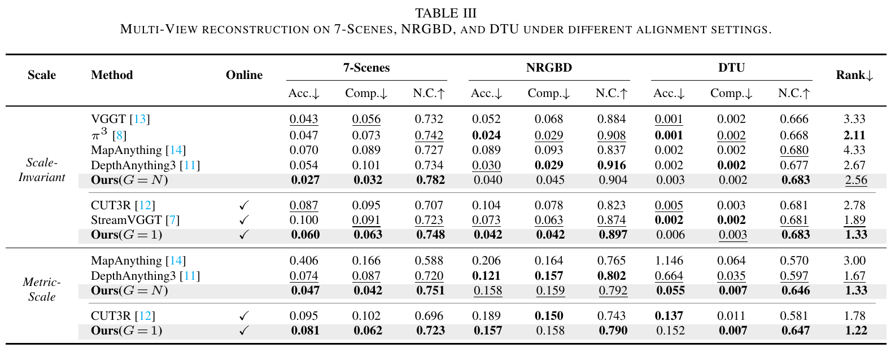
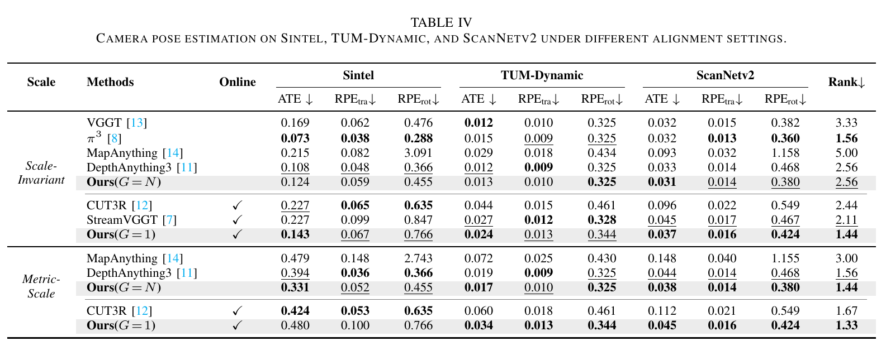
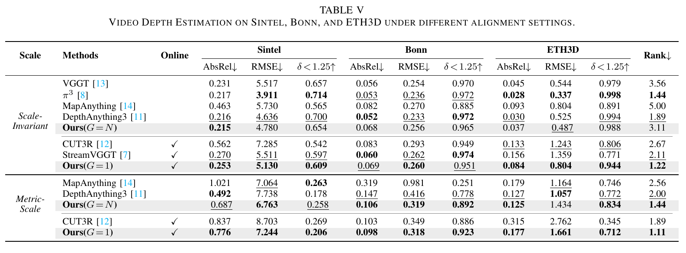
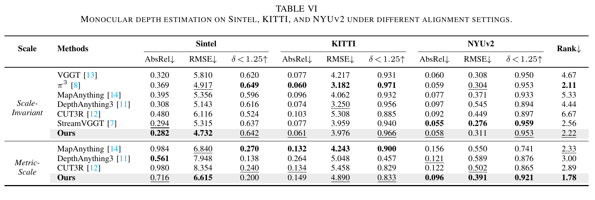
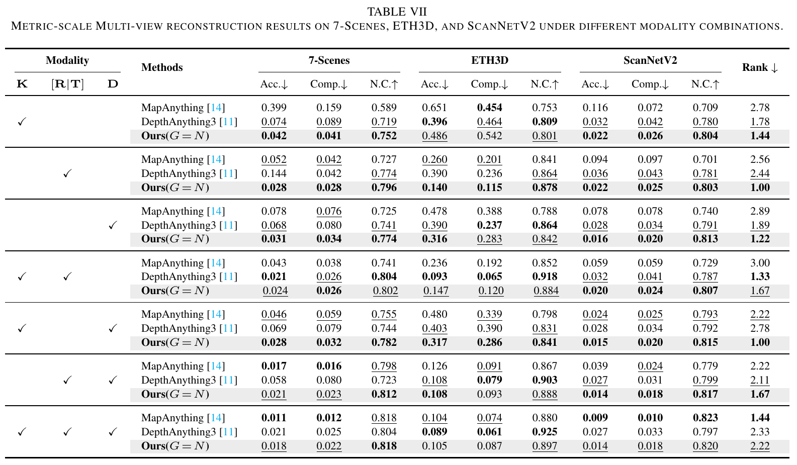
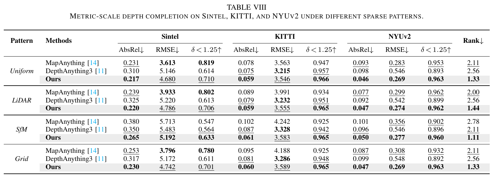
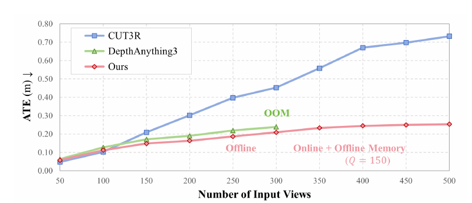
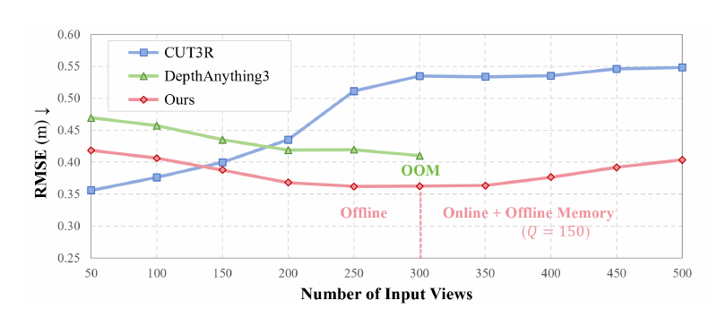

Long horizon
Still accurate at 500 frames
At 500 frames on NRGBD its pose error is 2.9× lower than CUT3R's. DepthAnything3 runs out of memory at 300.
MULTIMODAL PERCEPTION · 2026
Unified Geometry Learning with Group Autoregressive Transformer
OVERVIEW
UniT is a unified feed-forward model that reformulates a wide range of geometry perception capabilities into a single framework, covering diverse view configurations, modality combinations, metric-scale perception, and long-horizon scalability. It supports both online and offline inference over an arbitrary number of views, flexibly incorporates auxiliary modalities such as camera parameters and depth maps, recovers geometry at metric scale in physical units, and maintains bounded complexity over long horizons in in-the-wild environments.
Online video, binocular streams and offline multi-view sets, over any number of views.
−16% pose error from G = 1 to G = N, same modelCamera intrinsics, extrinsics and depth maps can be added whenever they are available.
Best average rank in 5 of 7 input combinationsGeometry is recovered in physical units rather than up to an unknown scale.
Best average rank in all 7 metric-scale comparisonsComplexity stays bounded as sequences grow in in-the-wild environments.
An N/3 cache stays within 0.002 m of a full oneMETHOD
UniT treats a group of G synchronized views as one autoregressive step. Attention is bidirectional inside a group and causal across groups, so one model runs online (G = 1), on stereo or multi-camera streams, or offline (G = N).
Bidirectional attention within a group, causal attention across groups. One formulation covers monocular video, multi-camera streams and multi-view sets.
01 Any view configurationDepth and intrinsics become point tokens and extrinsics become pose tokens, fused with image tokens at aligned pixels. Inserted four times, it adds about 3% of the parameters.
02 Any modality combinationScale-invariant constraints plus a partial absolute term. The model learns relative geometry first, then recovers metric scale on its own.
03 Metric-scale perceptionAnchor-free relative poses remove the dependence on the first frame, so the cache can drop its oldest entries and stay bounded over long horizons.
04 Long-horizon scalabilityEXAMPLES
Point clouds reconstructed by UniT, from campus scenes at HKUST(GZ) to public driving and synthetic sequences. Each scene loads only when you select it.
Drag to rotate, scroll or pinch to zoom, and switch scenes with the thumbnails. Turn on Measure to check the real-world distance between any two points.
LIVE DEMO
The Hugging Face Space runs the released model on your images, no setup required.
Runs on Hugging Face Spaces. If the Space is asleep it takes about a minute to start.
RESULTS
Compared with VGGT, π³, MapAnything, DepthAnything3, CUT3R and StreamVGGT under both scale-invariant and metric-scale settings.






Three settings most models can't handle: very long sequences, extra sensor inputs, and sparse depth.
Long horizon
At 500 frames on NRGBD its pose error is 2.9× lower than CUT3R's. DepthAnything3 runs out of memory at 300.
Multi-modal input
Give it intrinsics, camera poses or depth, alone or combined. UniT uses whatever is available and never places below 2nd.
Depth completion
Random points, LiDAR beams, SfM points or a coarse grid: UniT fills in dense depth best in every case.
Long horizon on NRGBD, from 50 to 500 frames in steps of 50. Point at a chart to read the values.


ANALYSIS
The four capabilities from the overview, each traced to the design behind it and checked against the paper's own numbers: the benchmark tables (Tables 3–7) and the ablations (Tables 9–11 and Fig. 10).
01Any view configuration
−16%camera-pose error going from G = 1 (online) to G = 90 (offline) with the same model
Group autoregression makes the group size a choice at inference time. Larger groups let more frames attend to each other in both directions, and the error falls steadily across the whole range, with no cliff in between.
Design Group autoregression02Any modality combination
5 / 7combinations of intrinsics, extrinsics and depth in which UniT has the best average rank
Modal attention turns depth and intrinsics into point tokens and extrinsics into pose tokens, then fuses them with image tokens at aligned pixels, so any subset can be given at test time. Against simpler ways of fusing them it has the lowest average error.
Design Modal attention03Metric-scale perception
7 / 7metric-scale comparisons in Tables 3–6 in which UniT has the best average rank, offline and online
Regressing metric geometry directly is hard to optimise. The scale-adaptive loss learns relative geometry first and adds a partial absolute term, so metric scale comes without giving up shape.
Design Scale-adaptive geometry loss04Long-horizon scalability
N/3of the frames in the KV-cache queue keep pose error within 0.002 m of caching them all
Anchor-free relative poses mean no frame has to stay in memory for good, so the queue drops old tokens once it is full. Dropping by stride stays closest to a full cache.
Design Queue-style KV cachingCITATION
@misc{wang2026unit,
title={UniT: Unified Geometry Learning with Group Autoregressive Transformer},
author={Haotian Wang and Yusong Huang and Zhaonian Kuang and Hongliang Lu and Xinhu Zheng and Meng Yang and Gang Hua},
year={2026},
eprint={2605.21131},
archivePrefix={arXiv},
primaryClass={cs.CV},
url={https://arxiv.org/abs/2605.21131},
}